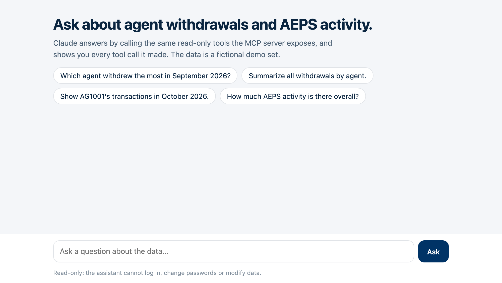

A back-office API, ready for AI agents.
A Spring Boot micro-finance API (agent withdrawals, AEPS reporting, secure admin auth) with an AI layer on top: an MCP server any AI client can plug into, and a Claude-powered assistant that answers questions in plain English. Both use the same read-only tools.
Two ways in, one set of tools
People who already use an AI client plug in the MCP server. People who just want answers use the assistant app, which is itself an MCP client. Add a tool once and both get it.
Claude Desktop, Claude Code, or any MCP client connects directly.
A web chat and CLI where Claude picks the tools and shows every call.
Python, MCP SDK 2.x. Validates input before anything reaches the API.
- list_withdrawals
- agent_withdrawal_summary
- aeps_activity
- monthly_report (prompt)
Java, Spring Boot. SQLite with demo data by default, MySQL in production.
Try the tools
Each example is a real tools/call recorded from the MCP server running against the API. Pick one to see exactly what an AI agent sends and gets back.
Request
Response
The tools
What an AI client discovers when it connects (tools/list). All are marked read-only. Login, user data and password change are deliberately left out: an AI agent should never handle credentials.
Connect Claude
Run the API (./mvnw spring-boot:run) and add the server to your client. No API key needed for this path.
The assistant app
For people who just want answers: ask in plain English, and Claude calls the tools for you.

- You ask "Which agent withdrew the most in September 2026?"
- Claude chooses a tool and its arguments, here
agent_withdrawal_summaryfor 2026-09-01 to 2026-09-30. - The app runs it through MCP against the API and hands the result back.
- Claude answers using only numbers from tool results, and the chat shows every tool call it made so you can check them.
It runs on your own machine with your own Anthropic API key. It is not hosted publicly, so there is no shared key for anyone to misuse.
cd microfinance-api/ai export ANTHROPIC_API_KEY=sk-ant-... uv run --extra app app.py # http://127.0.0.1:8001
Under the hood
Stack
- Java 11, Spring Boot 2.5, Spring Data JPA, BCrypt
- SQLite with fake demo data by default, MySQL via environment variables
- Python 3.11+, MCP SDK 2.x, Starlette, Anthropic SDK (Claude Opus 5.5)
Security choices
- AI gets read-only tools only; no credentials ever pass through them
- Input validated before reaching the API; API outages become clear tool errors
- Password changes require the current password; hashes never leave the server
- Configurable CORS, secrets only from the environment